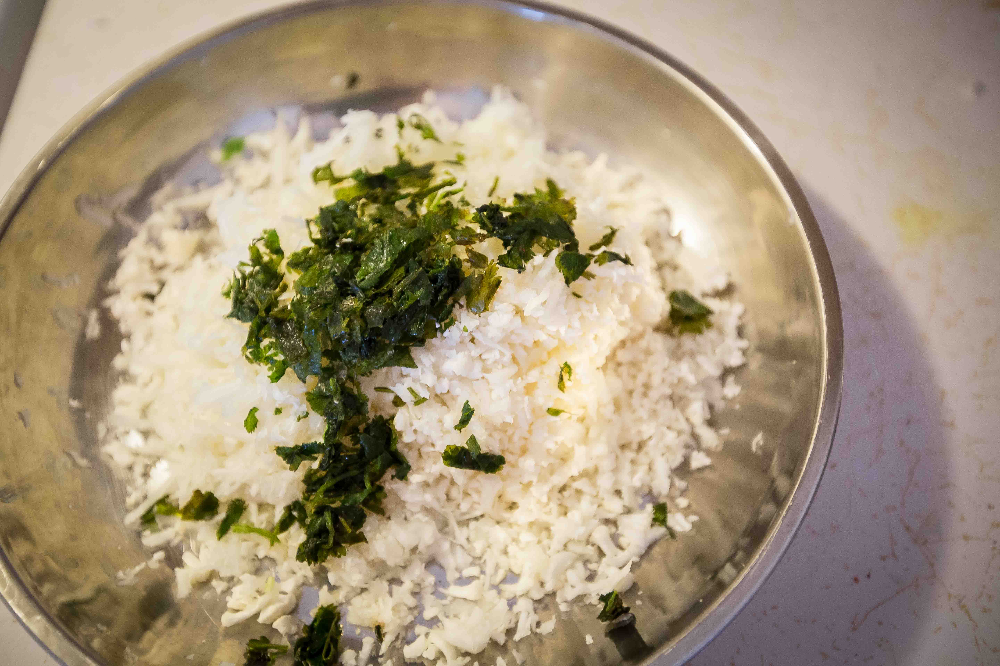
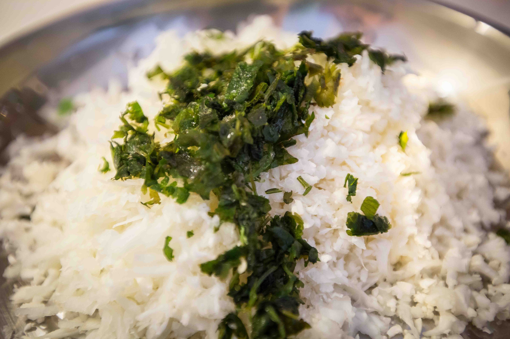
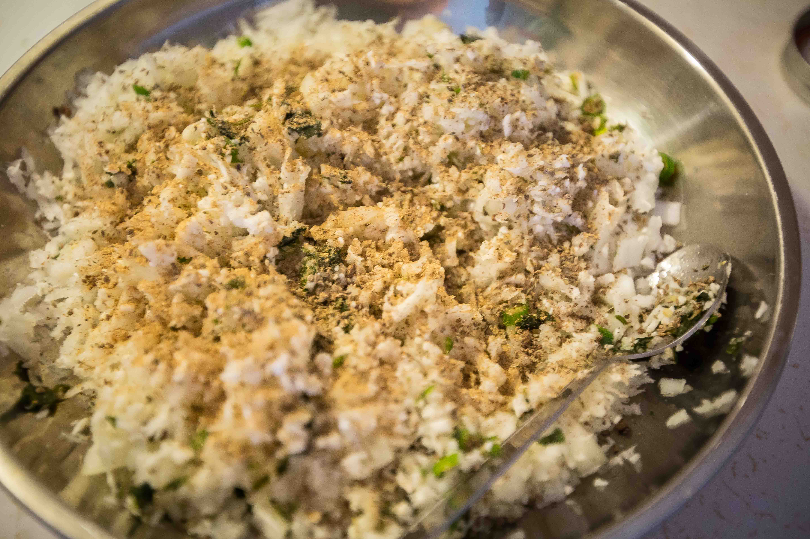
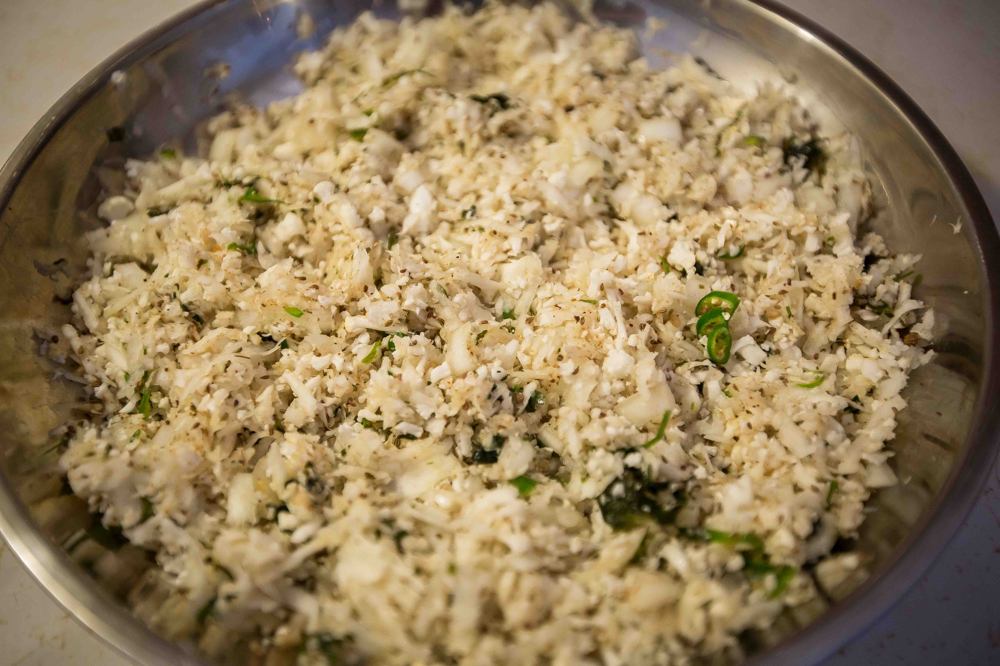
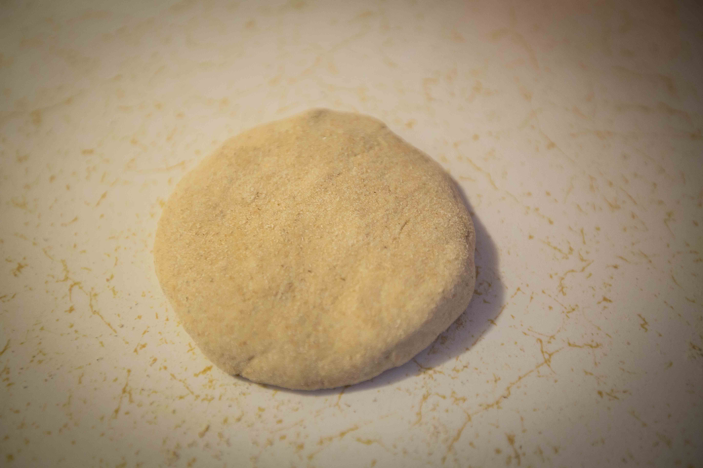
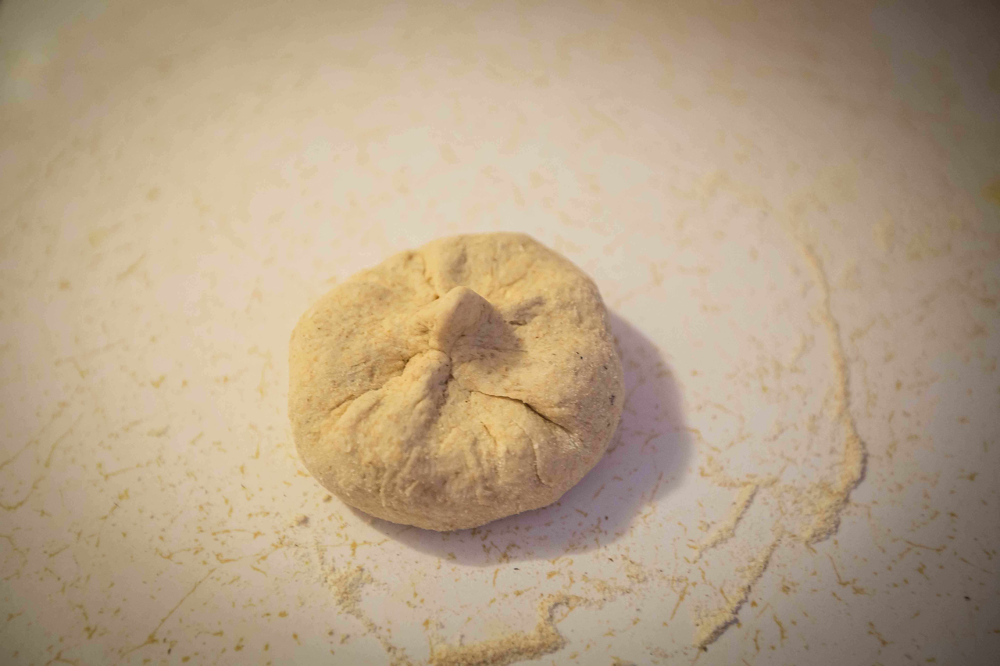

Gobhi (cauliflower) parantha is a popular comfort food for most Indians. The fresh taste of cauliflower combined with onions, green chillies, cilantro and epic spices makes this one of my favorite parantha recipes. Tangy, homemade mango pickle (some store bought varieties can be lip smacking too), raita (recipe below), whipped white butter and salad make a wonderful meal - for brunch, late breakfast, lunch or dinner.
- Cauliflower, half a head
- Onion: red, white or yellow, one large halved or one medium
- Fresh green chillies, 2-3
- Ajwain aka carom seeds, 1 tsp
- Chaat masala, a tsp
- Dried mango powder, a pinch
- Salt, according to taste
- Cilantro leaves, to garnish
- MDH Parantha masala, a pinch - optional
- Aata aka whole wheat flour, 2.5 cups
- Water, as required
Instructions
Mix the aata (whole wheat flour) with water and knead it into a soft dough.
Cut the caulifower into half and grate it.
Tip: wrap the other half with cling wrap and store it in your veggie drawer, for upto 4 days. Can be used in mix-veg, pasta sauces, or any other dish with cauliflower.
Finely chop cilantro and add it to the grated cauliflower.

Chop the onion and green chillies.
Mix in the dry spices.
Tip: add salt first. start adding little amounts of spices and taste the filling as you go. if your dough is plain, keep the filling slightly spicy.

Make a small dough ball using some dry flour and roll it out to the size pictured.
Put the cauliflower filling inside.
Fold up the edges around the filling to close the dough ball.
Using a belan or rolling pin, roll out the dough ball to flatten it.
Using dry flour is essential to achieving this shape - just like making hoemamde pizza crust or spaghetti.
Put the tawa or skillet on the stove and when it's hot, put the rolled out parantha.
Let one side cook completely before flipping; observe the changes in the color of the dough as it cooks. Once the entire parantha has a uniform hue, flip it.
Cook the other side well and add oil on the brown roasted side.
Keep the skillet on medium high and cook the parantha to your desired doneness.
The first parantha can certainly be for the dog, but, trust me, the second one will be great.

Prepare your feast with some raita and salad.
Raita Recipe
Whip chilled yoghurt. Add a tsp of roasted cumin powder (buy it or make your own), a pinch of chaat masala, a pinch of red chilli powder, a few grains of Himalayan rock salt.
Salad Recipe
A few leaves of spinach tossed together with cucumber, tomatoes and a few pieces of onion.